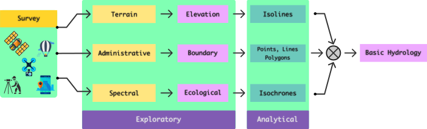

We all know Water is the elixir of Life. And freshwater is is much more scarce elixir of Life. When there is more
living beings in a planet, competition emerges to sustain life that depends on this elixir. With humans in such an
ecosystem, known for consuming water from cleaning our ass to making useless beverages - makes the competition much
worse. Especially when the raging market for water packed in polyethylene bottles and selling sand that once was a river
and lake beds to meet the accelerated urbanization requirements become normative. It turns out humans are their own
problems. I mean me too.
Beautiful Meandering history of Mississipi River
Well i dont know what i can contribute to solve this problem, apart from being conscious and take part in protests as
a usual common citizen would do. But i can do one more thing that feeds my intellectual capacity as well as letting
myself understand the problem from a scientific but associated perspective. With that intention & existing know how of
handling GIS data, tools, some theory & internet i think i can do something about it. But why River in particular ?
I view common water bodies as (rivers, acquifiers, lakes, ponds, tanks) as the common representator of water collection,
flow, banking, and contributor of complex ecosystems which in turn contribute to other ecosystems. Its flow completes the
natural water/hydrological cycle.
Liking the power of Free Software tools contributed by awesome developers, students, researchers all over the world is
just one thing. Doing stuff using it is completely a new experience. It is definetely a interesting and addictive
task. It is like having a katana collaboratively made by swordsmiths trained by good martial art mentors. If i am not
good making katana, i shall learn to use it. Since now i can access the information how it is made and why it is made
so, it will help in slashing through realworld problems and issues. One has to know how to use it & when to use it.
KNOWING HYDRO STUFF
Being conscious and aware about the problems surrounding us are vital, and getting to know about the
geographical nature & environment that sustains us is much more essential. It is the material & immaterial
fabric that connects us. Exploring the topography around ones location, aided with the modern FOSS tools,
is not equivalent to what one shall enjoy in taking a magnetic compass, finely scaled map, trekking, taking
notes, surveying, collecting data from nature, recording nature's awe but will surely reduce the labour
that loads our intellectual work, so that we can use it wisely for craftsman ship embedded in the work.
This is what i have tried to attempt in the earlier article, to start with.
Starting from the common GIS workflow again guides one to keep the process simple and explainable. In this
attempt we are trying to look at the river of interest and see how come FOSS based tools, libraries, Open
data, Open Access research papers, & internet will help us explore.
Common GIS Workflow
Learning hydrological view of nearby Water bodies (ex: River) has sure lead the exploration to all other overlapping
transdisciplinary fields. It is a wonderful way of learning geo-sciences that also lets one constantly be aware about
the socio-economic influence it always has in human history. So, before doing something with the tools that provides
the power, one has to know the theoretical understanding of what hydrology mean, how it is related to fundamental
topography and how will it water collection, flow, & storage, until it confluences to either the ocean or
sinks to a land locked lake/pond.
Its wise to remember, that both terrain study and hydrological study of a
region is carried out using calibrated survey instruments, trained workforce
constituting managers, researchers, scientists, surveyors, auditing officials, etc. This attempt is to see how far we can go with
Open data, FOSS tools & Open Access Research. Labour put into such tedious task of collecting data representing "ground truth" &
disseminating data for further use must be thanked. It is a well known fact, that geospatial science has always respected, adapted
and contributed for Open systems & standards.
LET'S TRY IT
Hydrology, as far as i understand constitutes knowing about several kind of data, and related knowledge about it.
Only then one can understand how labouriously collected can be put together to make sense of it. Also from a
community of individuals perspective, working on how to extract useful, intutively interpretative & interactive
information about the local region is of fundamental importance. As the Region is now bounded it requires relatively
very less computing requirements, and when exceeds a individuals power, communities support in handling the load
& making the work very feasible and useful at the end.

Understanding Hydrology Workflow
Topography of a region decides the hydrological effects. Learning about one have lead to learning about the other.
Understanding about the information dependence lets us see how terrain contribute to formation of catchment basins.
With the availability of open data and internet, one can analyze and visualize topography from the Terrain data
available in public domain. Furthermore, access to Spectral remote sensing data, and their derived indices (water,
vegetation, turbidity, ...) help visualize how the flow of water & its storage form the hydrology throughout its
presence. Then one could see clearly how the fundamental topographical & hydrological nature of a region influences
the cultural & socio-economic conditions.
Knowing surface/terrain information and generating topographic details from it for the selected region, based
on administrative boundary will be the most intuitive way to focus the scope of play and analysis. When
the region of interest, cannot be confined within a specific administrative boundary, one may have to
widen the scope of interest to more than one geographical regions, spanning neighbouring villages or
districts or counties or states or countries. This makes the boundary information to be accurate and
satisfactory for included administrative regions. Care needs to be taken that such an attempt must not
trigger any boundary related issues while publishing.
But Why ? In the case of hydrological study, for instance a river, which naturally provides
resources for more than an administrative region is an undeniable common and shared resource. In such cases
starting from topographic analysis to extracting hydrological and socio-economic or cultural information
needs to include plurality of inter-boundary features. Every step of the study & analysis must be underpinned
with scientific and engineering principles & practices.
Since, i have already tried understanding terrain and extrating topographic information associated with it,
in an earlier article, as
in the above picture. It would be better to further see how it helps in associating with hydrological understanding.
Also, since my interest is now aligned with studying and analysing hydrology of south indian river Palar.
Thus now, the region of interest, must span the districts in each of the 3 states, through out which Palar flows: